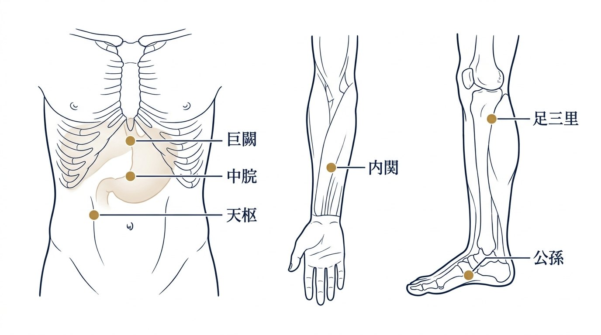

原発性硬化性胆管炎の鍼灸
胆管が狭くなり胆汁の流れが滞る指定難病。専門医の定期管理を第一に、疲労感や自律神経を補完サポートします。


院長YouTube解説・関連動画
原発性硬化性胆管炎の症状は、黄疸や皮膚のかゆみ
原発性硬化性胆管炎の症状は、黄疸や皮膚のかゆみです。これらは、胆管が狭くなり胆汁の流れが悪くなることによって起こります。細菌が感染すると、胆管炎などの症状も起こります。
最初の段階では、黄疸やかゆみが起きることが多いです。しかし、特に症状がない時に体を調べてたまたま見つかることもあります。原発性硬化性胆管炎であると判断された後も特に症状がないこともあります。
判断されないまま放置した場合や改善の効果が見られない場合は、肝臓の機能が少しずつ下がっていき、肝硬変に進んでいきます。
そうなると、食道や胃の静脈瘤や腹水、黄疸、 肝性脳症などが起こり、肝不全へ進み、命に危険が及ぶこともあります。
・無症状期間
多くの場合は初期段階では症状を感じません。病気は肝臓を調べたり他の腸の病気、特に潰瘍性大腸炎の判断の一環として偶然に発見されることがあります。
疲労はPSCの初期の一般的な症状であり、日常生活に影響を及ぼす可能性があります。疲労の原因は完全には理解されていませんが、慢性の病気のストレス、肝臓の機能低下、または他の健康問題が寄与している可能性があります。
胆汁の流れが妨げられると、胆汁成分の一つであるビリルビンが血液中に蓄積します。これにより皮膚や眼の白い部分が黄色くなる症状、黄疸が生じます。
・かゆみ
胆汁が肝臓から適切に排出されないと、特定の物質が血液中に蓄積し、皮膚のかゆみを引き起こすことがあります。かゆみは時には非常に強く、生活の質を著しく低下させることがあります。
・上腹部痛
一部では上腹部または右上腹部の痛みを経験することがあります。これは胆汁の流れの障害によるもので、痛みは通常は緩慢に進行します。
原発性硬化性胆管炎の改善方法は、ウルソデオキシコール酸を使うことです。ウルソデオキシコール酸を使うことでALPやγGTPの値が下がることが期待できます。値があまり下がらない場合は、ベザフィブラートを追加することもあります。
ただし、これらの薬が原発性硬化性胆管炎の進みを防いでいるかどうかのデーターは十分ではありません。原発性硬化性胆管炎の改善については今後まだまだ研究が必要なのです。
胆管の強い狭窄がある場合は、内視鏡によって胆管を拡張することで改善を行います。症状が進んで肝不全の状態になると、改善する方法は肝移植のみです。
・症状の管理
PSCに関連する症状に対する改善方法は多岐にわたります。例えば、肝臓から胆汁が十分に排出されないために起こるかゆみは、胆汁酸を結合して排出する薬剤（例：コレスチラミン）で管理されることがあります。また、PSCが進行し、肝臓の機能が低下すると出血傾向が見られることがあり、その場合はビタミンKの補給が必要となることがあります。
・胆管の拡張
胆管が狭窄し、胆汁の流れが妨げられると、内視鏡的逆行性胆管造影（ERCP）という処置を用いて胆管を拡張することがあります。この処置により、一時的にでも胆汁の流れが改善し、症状が軽減されることがあります。しかし、この方法は合併症のリスクもあり、全ての人に対して適応されるわけではありません。
・免疫抑制
PSCは自己免疫的な要素を持つ可能性があり、そのため免疫抑制薬が試みられることもあります。しかし、これらの薬剤がPSCの進行を阻止または遅らせることが確実に示されたわけではありません。
・肝移植
最終的に、PSCが肝臓の機能を大きく損ねた場合、肝移植が必要となることがあります。肝移植は大きな手術であり、重篤な合併症を引き起こす可能性がありますが、多くの場合は生命を維持し、生活の質を改善するための最善の選択肢となることがあります。この手術の成功は高く、多くの場合手術後に正常な生活を送ることができます。
・ライフスタイルの改善とサポート
PSCでは、健康的なライフスタイルを維持することも病状の管理に必要であると言われています。これには、バランスの良い食事、定期的な運動、アルコールの避ける、十分な休息をとるなどが含まれます。また、ストレスや不安を軽減するためには、カウンセリングや支援グループを利用することも有益です。
原発性硬化性胆管炎では、血液などを定期的に調べて医師と相談しながら薬を使って改善を行うことが大事です。
珍しい病気でまだわかっていないことも多いため、できれば原発性硬化性胆管炎に詳しい医師に相談に行くことをお勧めします。
定期的に専門の医師を尋ねることが難しい場合も一度は相談に行き、現状や今後の見通し、改善方法など気になることを相談することで、より改善に前向きに取り組むことができる可能性があります。
原発性硬化性胆管炎の改善例
原発性硬化性胆管炎はどのように改善が行われるかをご紹介します。
事例1：一般的な方法
40歳の男性
持続的な疲労と軽度のかゆみに悩まされ病院に行きました。彼はPSCと判断されました。まず、肝臓からの胆汁の排出を促す薬（ウルソデオキシコール酸）を処方され、疲労感とかゆみの症状が軽減されました。
事例2：進行したPSC
55歳の女性
進行したPSCを持っており、疼痛と黄疸が顕著でした。彼女は胆管の拡張を受け、胆汁の流れが改善されました。しかし、彼女のPSCは進行し続け、最終的に肝移植の適応となりました。手術後、彼女の生活の質は大幅に改善し、再び活動的な生活を送ることができました。
事例3：PSCと炎症性の腸の病気の併存
30歳の男性
PSCとともに炎症性の腸の病気を持っていました。彼の場合、薬での改善が行われました。IBDの活動を抑えるための免疫抑制薬と、PSCの症状を和らげる胆汁酸製剤が併用されました。また、彼の食事にも注意が払われ、PSCとIBDの両方に有益な食品が推奨されました。
以上の事例からわかるように、PSCの改善方法は多岐にわたります。PSCの改善には「ワンサイズフィットオール」のアプローチは存在しないため、改善は個々の具体的な症状、病状の進行度、同時に存在する他の健康問題、そして生活スタイルによって異なります。
事例4：若年者のPSC
10歳の少女
PSCと判断され、肝臓への影響を最小限に抑えるために早期から改善が開始されました。彼女はウルソデオキシコール酸を始め、その後ビタミン補給を併用しました。また、彼女の家族全員が彼女の病状を理解し、健康的な食生活と適度な運動を維持することで、彼女の全般的な健康状態を維持するのを支えました。
事例5：年配者のPSC
72歳の男性
長年にわたりPSCを発症しており病状は比較的安定していたが、年齢とともに一部の症状が増加しました。彼のチームは彼の健康状態全般を考慮に入れ、一部の症状を管理するために痛み止めとかゆみ止めを追加しました。また、彼は定期的な心臓スクリーニングを受け、PSCによる他の健康リスクを評価しました。
これらの事例は、PSCの改善方法が個々に対応して適応することを示しています。PSCに対する改善方法は、症状の軽減、生活の質の向上、そして最終的には肝臓の健康を維持することを目指しています。
▼ 詳しく知りたい項目だけタップして開けます（全項目の医学解説を収録）
01. 原因とメカニズム
なぜ症状が起きるのか・鍼灸の作用機序を読む
▼
01. 原因とメカニズム
なぜ症状が起きるのか・鍼灸の作用機序を読む
肝臓の内外にある比較的太い胆管に障害が生じて狭くなり、胆汁の流れが滞ることで肝臓の働きが徐々に低下していく病気です。明確な原因は解明されていませんが、自己免疫の関与や遺伝的素因、環境要因、腸内細菌叢の影響などが研究されています。潰瘍性大腸炎やクローン病などの炎症性腸疾患を合併することもあります。
なぜ鍼灸で改善へ向かうのか？（作用機序の図解）
原発性硬化性胆管炎に対する鍼灸は、脳腸相関と迷走神経反射による胃腸運動の調整機序を通じて、お体本来の回復力を引き出します。
胃腸機能と深く結びつく四肢・腹部の経穴を刺激し、体性感覚神経から中枢へ信号を送ります。
脳幹を経由した体性-内臓反射により、副交感神経（迷走神経）経由で胃腸の働きを調整します。
弱まったぜん動を促す一方、下痢型の過剰な収縮や内臓知覚過敏は穏やかに鎮静します。
ストレスで乱れにくい胃腸の土台を整え、胃もたれ・便通異常・吐き気の軽減を目指します。
02. よくあるお悩み
このような症状はありませんか？（4項目）
▼
02. よくあるお悩み
このような症状はありませんか？（4項目）
- ✓原因のはっきりしない慢性的な疲労感やだるさが続く
- ✓皮膚のかゆみや黄疸など胆汁の流れに関わる症状が気になる
- ✓右上腹部の違和感や重だるさを感じることがある
- ✓長期的な通院や合併症への不安から睡眠や気分が安定しない
03. 当院の施術アプローチ
施術の進め方・改善のポイントを見る
▼
03. 当院の施術アプローチ
施術の進め方・改善のポイントを見る
04. ツボ詳細・セルフケア一覧
胃腸・逆流性食道炎・機能性ディスペプシアのツボ図解（6穴）
▼
04. ツボ詳細・セルフケア一覧
胃腸・逆流性食道炎・機能性ディスペプシアのツボ図解（6穴）
実際の施術ではお一人おひとりの体質・症状に合わせて選穴しますが、胃食道逆流症（GERD）・機能性ディスペプシア・胃痛・吐き気ケアの臨床でよく用いられる代表的なツボの目安です。
| ツボ名 | 位置の目安 | 主な狙い | セルフケアの注意点 |
|---|---|---|---|
| 巨闕（こけつ） | みぞおちの骨のすぐ下 | 胸やけ・みぞおちのつかえ感・横隔膜の緊張緩和 | 食後すぐの強い圧迫は逆流を招くため避けます。 |
| 中脘（ちゅうかん） | みぞおちとおへその真ん中 | 胃もたれ・早期膨満感・胃排出能サポート | 温めながらゆっくり腹式呼吸を行うと緩みます。 |
| 天枢（てんすう） | おへその左右それぞれ指3本分外側 | 消化管全体の蠕動バランス・お腹の張り軽減 | お腹が冷えやすい方は温灸がおすすめです。 |
| 内関（ないかん） | 手首の横ジワから指3本分肘寄りの中央 | 吐き気・胃酸逆流に伴う不快感・下部食道括約筋の調整 | 胃カメラ等の検査前後のセルフケアにも有用です。 |
| 足三里（あしさんり） | 膝の下外側、指4本分下 | 迷走神経を介した胃腸運動調整の最重要穴 | 毎日続けやすい胃腸の養生穴です。 |
| 公孫（こうそん） | 土踏まずの縁、親指の付け根からかかと寄り | 胃痛・胃もたれ・自律神経性の胃腸不調ケア | 内関と組み合わせて優しく押します。 |
05. 医学的根拠・国際査読論文（PubMed / Cochrane）
科学的エビデンス・出典リンク一覧（4件）
▼
05. 医学的根拠・国際査読論文（PubMed / Cochrane）
科学的エビデンス・出典リンク一覧（4件）
国際的な医学データベース（PubMed・Cochrane等）で報告されている胃食道逆流症（GERD）・機能性ディスペプシア・胃痛・吐き気ケア領域の代表的な査読済み鍼灸研究をまとめています（標準治療との併用や研究上の限界を含めて正確に掲載）。
| 年・研究デザイン | 対象・規模 | 主な結果 | 限界・出典 |
|---|---|---|---|
| 2016年 大規模多施設RCT | 慢性重症機能性便秘 1,075名（15病院） | 週平均完全自発排便回数が電鍼+1.76 vs シャム+0.87（P<0.001）、20週追跡時も持続（P<0.001）。 | 20週以降の長期経過は未評価。 Ann Intern Med (PMID: 27618593) |
| 2020年 多施設RCT | 機能性ディスペプシア（PDS）278名（5施設） | 4週時点の総合改善反応率83.0% vs シャム51.6%（P<0.001）、終了後12週間維持。 | 16週脱落率18%・施術者盲検化不可。 Ann Intern Med (PMID: 32422066) |
| 2025年 多施設RCT | 下痢型過敏性腸症候群（IBS-D）280名（6病院） | 6週時点の複合反応率57.9% vs シャム41.4%（RR 1.40, P=0.008）、重篤な有害事象なし。 | IBS-D限定・中国多施設試験。 Gastroenterology (PMID: 40441496) |
| 2017年 メタ解析 | 胃食道逆流症（GERD）12 RCTs（n=1,235） | 鍼＋西洋薬併用は西洋薬単独より総合改善優位（RR 1.17, p=0.03）、再発率低下（RR 0.42, p<0.001）。 | 組入れ試験の質が低く標準治療との併用が前提。 Acupunct Med (PMID: 28689187) |
参考文献・出典
- 2016年 大規模多施設RCT（慢性重症機能性便秘 1,075名（15病院））— Ann Intern Med (PMID: 27618593)
- 2020年 多施設RCT（機能性ディスペプシア（PDS）278名（5施設））— Ann Intern Med (PMID: 32422066)
- 2025年 多施設RCT（下痢型過敏性腸症候群（IBS-D）280名（6病院））— Gastroenterology (PMID: 40441496)
- 2017年 メタ解析（胃食道逆流症（GERD）12 RCTs（n=1,235））— Acupunct Med (PMID: 28689187)
06. よくある質問（FAQ）
よくあるご質問を見る（2件）
▼
06. よくある質問（FAQ）
よくあるご質問を見る（2件）
Q. 原発性硬化性胆管炎の治療薬を飲みながら通院できますか？
はい、専門医の処方や定期検査を必ず継続したうえで、疲労感や自律神経の乱れを和らげる補完ケアとしてご利用いただけます。事前に主治医へご相談ください。
Q. 皮膚のかゆみやだるさへの配慮はありますか？
皮膚の状態を確認しながら刺激量を控えめに調整し、自律神経を落ち着かせる穏やかな施術を行います。
あわせて読まれる関連疾患（消化器のお悩み）
椎体・肛門・気管食道・橈骨・腎の複数徴候を合併する先天性疾患。専門医管理下で筋緊張や疲労を補完します。
キノホルムによる薬害で生じた神経障害（新規発症なし）。専門医管理下で慢性期のしびれや筋緊張を補完ケアします。
飲酒が主因でない脂肪肝に炎症・線維化が加わった状態。食事と運動での減量を軸に、倦怠感や生活リズムの乱れを鍼灸で支えます。
長期の過剰飲酒で脂肪肝から肝炎・肝硬変へ進む肝障害。専門医管理と禁酒を基本に疲労や自律神経を整えます。
胃の一部が横隔膜の食道裂孔から上方へ飛び出す状態。医療機関での管理と並行し背部緊張や自律神経を整えます。
ガストリノーマによる胃酸過剰で難治性潰瘍を起こす疾患。専門医の治療を第一に、体調・自律神経を補完します。
CLINICAL RECOVERY CASES
✨ 実際の臨床改善事例・回復経過を見る
銀座本院をはじめ各院での実際の改善事例を症状別に絞り込んでご確認いただけます。
おひとりで悩まず、まずはご相談ください
銀座本院・川口・大宮・横浜・博多・田無の各院でご予約を承っております。